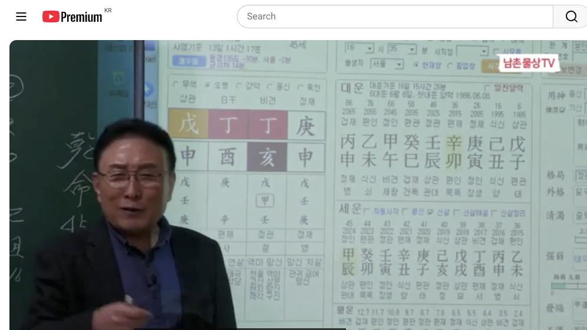

남촌물상TV 전체 문서 › 동영상 V0101
이런 사주를 가진 사람은 부자가 된다

| 문서 번호 | V0101 (동영상) |
|---|---|
| 영상 URL | https://www.youtube.com/watch?v=UItEyH_9ZeQ |
| 영상 ID | UItEyH_9ZeQ |
| 게시일 | 2024-11-11 |
| 길이 | 21:05 (1265초) |
| 조회수 | 2,077회 (수집 시점 기준) |
| 카테고리 | Howto & Style |
| 자막 | ko (자동생성) |
| 수집 시각 | 2026-08-30 19:08 (KST) |
영상 설명 (YouTube 설명 원문 그대로)
이런 사주를 가진 사람은 재물복 많아 부자가 된다 #재물복 #사주풀이 #사주팔자
전체 자막 (440구간 · 타임스탬프 클릭 시 해당 장면으로 이동)
[0:00]46세는이 정화를 제거할 거 아닙니까
[0:03]자 그러면 정립 한 목이 됐죠 월게
[0:05]합이 되잖아요 그러면 전부 재산이 다
[0:06]오는데 진유 합금
[0:10]아니에요 밴드에 올린 사주를 한번
[0:12]풀어 보겠습니다 경신 정의 정유
[0:15]무신이다 그 이런 사주를 보실 때
[0:18]이제 그 없는게 목요 모이죠 그러면
[0:21]여러 한번 안 10벌 생할 때 잘
[0:23]보세요 이제 오늘이 안 시법 얘기도
[0:25]좀 해 줄 건데 목이 없다는 얘기는
[0:28]그 우리가 그 어 육친 관계로
[0:32]엄마죠네 엄마 그럼 자 엄마라는 사람
[0:36]입장에 대해서 한번 생각을 한번 해
[0:39]보시게 좋아 목이라는게 엄마에요
[0:42]여기서 사주 구성에 목성 엄마인데
[0:45]엄마가 어떤 마음을 가지고 있을까
[0:47]하는 거 한번 생각 대주 한번 해
[0:49]보시면 사주가 쉽게 풀릴 수가 있다
[0:51]그래서 신법을 우리가 늘 활용을 하다
[0:53]보면 가장 쉬운 상 그 방법으로
[0:57]해결할 수 있는게 법이에요 그래서
[0:58]기초 이론을 아주 잘하셔야 그 생각을
[1:02]자주하고 할 수 있어 그러면 자
[1:04]목이라는이 그 엄마 입장에서 갑목이이
[1:08]나무를 엄마라고
[1:10]생각하면 내 아들에 대한 저 아들에
[1:12]대한 등불을 내가 달 수 있겠지 달아
[1:15]줘야 되겠지 하는 마음이 엄마의
[1:18]마음이 아니겠네이 금방 답이
[1:20]나오잖아요 어 그러니까 엄마가
[1:24]생각하는 것은 그이 또 저어이
[1:27]분께서도 엄마를 굉장하게 끔찍하게
[1:29]생각합니다
[1:30]엄마가 본인이 없는 엄마의
[1:34]목관에 근데 엄마 생각이 감옥이란
[1:37]나무를 심어주고 싶은 마음에 등불이
[1:40]두 개가 달리게 되면 내 아들이 잘될
[1:43]것이다는 생각 그럼 촛불 기술를 많이
[1:45]했다 이렇게 볼 수도 있는 거예요
[1:47]이제 이런 것을 연상을 하시면서
[1:49]여러분들이이 심법으로 안 될 때는
[1:52]풀어보라 그 말이에요 안심 그렇게
[1:54]하는 거예요 그래서 늘 접목을 하다
[1:56]보면 자 답이 나옵니다 자 그러면
[1:59]여기서 이제정 일주가 정화
[2:03]일주가 목이 없기 때문에 목이라는
[2:05]글씨를 어디서 만드느냐 항시 여러분이
[2:07]사주 푸실 때 없는 것을 어디서
[2:10]만들어 내겠느냐 이걸 보셔야 돼요 어
[2:13]만들 수 있는 글자가 어디 있어요
[2:14]끌어온 글자가 자 을목이 여기서 끌어
[2:17]오잖아요 자 그러면
[2:19]자 을목을 끌고 온다는 얘기는 엄마
[2:22]생각으로 바꿔봐 한번 엄마 각으로 자
[2:27]엄마가 내 아들한테 어떠을 원하고
[2:30]있는가 알 수가 있어요 그래 안 그래
[2:33]자 그러면 다시 한번 얘기해서이
[2:36]엄마가 저 을목을 볼 수 보라 그
[2:37]말이 쉽게 그냥음 그러면 엄마
[2:41]입장에서 을목은 어떤 결과일까요 그
[2:44]말이에요 엄마 입장에서 을목은 어떤이
[2:49]관계일까 한번 생각해
[2:52]보세요음 어떤
[2:54]관계일까요 엄마의
[2:57]마음은 엄마의 마음은 엄마가 아들한테
[3:01]아들이 뭐가 되기를 바라 겠냐 그
[3:03]말이에요 그걸 그 물어보라
[3:07]얘기야 그래서 이제 이런 것을
[3:09]여러분들이 안심법문 쉬워 그래서 내가
[3:13]기초율 잘하셔서
[3:30]맞습니다 소리가 나올 수밖에 없는
[3:31]거예요 이것이
[3:33]심법인 여러분들이 생각할때 자 잘
[3:36]보세요 여기서 끌어온 자는 을목이 즉
[3:39]을목이 것은 내 아들이 무 했으면
[3:42]좋겠냐고 하는 답을 얻을 수가 있어요
[3:45]자 여기에서 이제 을경 합을 하죠
[3:47]그럼 신금이 됐잖아요 자 잘 봐요 자
[3:50]신금이
[3:52]됐으면 첫째 조건은 저 신금은 누구
[3:56]재물이
[3:57]정 정화 어디 어디 두기 어느 거냐고
[4:02]여기 있잖아 여기 나의 뿌리 나의
[4:04]뿌리를 찾으라고 그랬어요 그러면
[4:07]여기가 신금이 되면 전부 다
[4:10]여기까지가 다 내 돈이야 그 경금일간
[4:16]됩니다이 경금이 저 어 신급으로
[4:19]바뀌어야만이 쪼로로 전부 내 거까지
[4:21]돈이 오게 돼 있다 이걸 연상을 해
[4:24]보시면 아 내 아들은 돈을 많이 번
[4:28]아들이 돼야 돼 자 그러면 이제
[4:30]우리가 생각 바꿔서 심법으로 내
[4:32]아들이 지금 그 커서 직업을 많이
[4:34]돈을 많이
[4:35]벌려면 그런다고 엄마가 사업이 돈이
[4:37]많이 사업해 주 것도 아니고 뭘 하면
[4:40]우리 아들이 돈을 잘 벌까 하는
[4:41]직업에 의식
[4:42]생각한다면 자이 사람이 직업이
[4:45]그만이에요 금 이니까 금의 금의
[4:49]행위를 하는게 원하니까 소위 본인이이
[4:53]금을 쓰는 직업을 본인이 하실 거
[4:55]아니야이가 원할까 그 금이라는 것이
[4:58]우리 이제 칼 저 칼도 고 이제
[5:00]이렇게 되고 그 어 생각한 부분을
[5:04]한번 연상을 해보면 탑이 설설히 나올
[5:08]있잖아요
[5:10]그래서이 사주 자체가 엄마가 의대를
[5:13]원한
[5:14]거예요 엄마가 의과대를 원했다고
[5:16]그러면
[5:19]자 내가 여기서 칼 자루만 만들면 뭔
[5:23]얘기하시죠 정화에서 칼 자루만
[5:27]만들면 저기에이 엄마가 해준 신금의
[5:31]칼날을 쓸 수 있는 거예요 생각이
[5:33]나죠 자 안심 쉽게 풀 수 있죠
[5:37]이렇게 그 쉽게 하는 방법을 찾으라
[5:39]그 말이에요 이건 그 어느 학교에서나
[5:42]없는 우리의 법이 고유
[5:45]법이라고 이것이 비법이 관법이기
[5:47]때문에 여러분들은 이런 걸 잘
[5:49]활용하셔서 상담을 하시면 백발
[5:53]중이다 자 그다음에 이거 결정이났다
[5:57]그러 이제 뭘로 봤냐 보통 정정이 두
[5:59]개 있 있요 그럼 자 여기 전반전과
[6:02]후반전으로 구별 해 봐야 돼 볼까요
[6:05]그럼 전반은 몇 세까지 볼까
[6:08]여기서 46세 그렇지 여기까지는
[6:11]46세의 기준이라면 여기 이후는
[6:14]40세 이유예요 이렇게 기준을 잡아
[6:17]봐 그러면 이제 자 그러면 초장에
[6:21]재물이 더 클 거냐 후에 재물이 클
[6:25]거냐 뭐
[6:27]생님 그렇지
[6:30]자 신유가 있잖아 그러니까 전반보다
[6:34]돈 후반에 돈을 더 많이 벌 수 있는
[6:36]사주다 이제 이렇게 딱 답을 알 수
[6:38]있잖아 그 우리들이 내가 그 얘기하실
[6:40]때 40대 기준에서 전반과 후반을
[6:44]구별해서 그 크게 보면 이제에 답이
[6:48]나올 거고 그다음에이 사람의 인생의
[6:51]전성기가 어느 때 있냐를 찾아봐야 돼
[6:54]사람이 다 어느 정도에서 살다 보면
[6:58]나의 인생의 전성기라
[7:01]있잖아요 자 그러면 어느 전석이 제일
[7:03]좋을 거예요 잘 봅시다가 없을
[7:07]때 46세
[7:09]봐봐요 자 그러면
[7:12]46세는이 정화를 제거할 거
[7:15]아닙니까 자 그러면 정립 목이 됐죠을
[7:18]합이
[7:19]되잖아요 그러면 전부 재상이 다
[7:22]오는데 진유합금 아니에요 그럼 자이
[7:25]진토는 것은 여기서 기점이서 있어요
[7:27]잘 보세요 여기에 신 될 수 있고
[7:30]여기에 신지이 될 수
[7:33]있어요 있죠 그 그이 사주 원국의
[7:37]지점에 중점을 놓고 봤을 때 똑같은
[7:40]신자이 돼 있다는 얘기예요 그러면 자
[7:42]신자라 것은 왜 신자니까 여기에
[7:46]임수의 저 정가 임수를 꾸르기 때문에
[7:49]자수가 따를 수 있는 거 신자이 될
[7:50]수 있어요 그러니까 금이 유통시킬 수
[7:53]있는 것이 굉장히 크다 자 금은 물이
[7:55]있어야 좋다 그러죠 우리가 자 그래서
[7:58]금은 물에서 놀기를 좋아 이렇게
[8:00]여러분들 강의를 했고 그 금이 물에서
[8:04]놀아줄 때 제일 재물이 크게 온다 그
[8:08]말이에요 그러니까 이런 것을 보시고
[8:11]이제 인생의 전성이 사람이 어떤
[8:13]것이다 딱 짚어 놓고 그러고 상담을
[8:16]하시면 뭐 말이 몇킬 청사 천리로
[8:20]나갈 수밖에
[8:22]없어요 그래서 통변이 가장 쉬운게
[8:25]우리리 물론이에요
[8:27]그리고 자 그대로 하시면
[8:31]돼 정확하게 송별이 된단 말이에요
[8:34]근데 이제 우리는 고전에 치우치다 본
[8:36]사람들은 굉장히 힘들어요 왜 그러냐면
[8:40]자꾸 안 될 때는 고조 꼭 생각을 해
[8:42]버야 거기에 그러다 보니까 혼동 스러
[8:46]잘 안 돼요음 그래서 여러분들은
[8:49]고전을 내려놓고 생각하셔야 돼 그리고
[8:52]그래서 그래야 안법 생겨 그러지 고전
[8:55]생각하 신법 절대 안 생겨 생길 수가
[8:58]없어 왜 그냥 면는 용신을 딱
[9:01]정해놓고 보기 때문에
[9:03]그래 그러면 사람이이 그 늘 변하고
[9:08]우리가 날만 세면 새로운 것이 변화가
[9:11]되는데 용신을 정해놓고 사주를 보게
[9:13]되면 시대 흐름이 맞지 않아요 그럼
[9:17]우리 같은 경우는
[9:19]뭐냐면 시대 철학이라고 하는
[9:22]자체는 지금의 시대 맞는 철학으로
[9:24]가자 그
[9:26]말이에요 그 지금 시대를 반영한 차로
[9:28]가야지 날의 법을 갖다가 여기다
[9:31]반영시킨다 얘기는 구시대의 철학을
[9:34]여기다 응용하지 마라 저는 그렇게 꼭
[9:36]하고
[9:38]싶어요 그 우리 그 여러분들이
[9:41]공부하실 때 이제 여러 가지 그
[9:43]생각을 많이
[9:44]하시는데이 기점 제가 설명한 대로만
[9:47]설명을 하시고 하시면 백발 중이야
[9:51]그리고 가장게 정확하게 집어낼 수
[9:54]있어 그러 이제 부모 관계 또 엄마의
[9:57]관계 다 구별 되잖아요 그다음에
[9:59]자식관계 보면 되잖아 자식은 그
[10:02]아들이지 근데
[10:04]우리들이 여러 가지 생각을 그 해
[10:07]보면은
[10:10]어 사주 구성상의 따라서 어떻게
[10:13]변화하고 있는가를 봐야 돼 그다음에
[10:15]또 뭘 보느냐 여기서 이제 시기적으로
[10:19]재물운을 쭉 한번 따져 보시라 그
[10:20]말이에요 재물운 그럼 자 재물운이 자
[10:24]어디서부터 여기
[10:26]있죠 자 여기 재물 여기에 재물 신금
[10:30]재물 사유축 재물 자 여러분들 여기서
[10:33]나타날
[10:34]때 천간에 나타난 재물은 내가
[10:38]쫓아가는 재물로 보라 그랬어요 내가
[10:41]그 재물을 타면 쫓아가는 재물 근데
[10:44]여기서 진 금에서 만든 것은 내가
[10:47]뭔가를 만들어서 통장이 저축한
[10:49]제물이요 사유도 마찬가지고 이것을
[10:52]여러분들이 이해하시고 상담하시면 정극
[10:55]백발 중이다 그러니까이 사람은
[10:58]실질적으로 여기까지는 겉으로 드러나는
[11:02]뭔가 그 재물을 쫓아가는 제물이었다
[11:04]men 여기는 진짜 알속기 재물이
[11:06]오는
[11:07]거죠 가장 정확해
[11:10]합니다 그래서 우리는 무조건 고전에
[11:12]생각할 때 생각하면서 제가 오면
[11:14]무조건 좋다 그래요 그러면 여기
[11:16]재운이 안 올 때는 뭐라 그래 안
[11:18]좋다게 안 맞는 거지 그러니까
[11:21]실질적으로 돈을 제일 많이 벌었는데
[11:25]그때 나 망했는데요 한 사람이 많아요
[11:28]그것이 고전에 재운의
[11:31]법해 그래서 저 역시도 재운이 때
[11:34]망했어요 망해
[11:36]봤어 제가 그 건설하면서 망한
[11:39]사람이에요 그때
[11:41]당시 그래서 돈도 날려보고 다 해봤기
[11:44]때문에 재운의 망한다는 용어는 내가
[11:48]그 그때 실감을 할 때 왜 다른 사람
[11:51]사주 오러 가면 재물이 좋다고 돈
[11:53]많이 벌 거라고 내 망해 내가
[11:56]여러분들이 이제 이런 것을 보시고
[11:57]이제 보시면 그 할 수 있어요
[12:00]확실하게 그게 이거는 내가 뭔가를
[12:04]지력 만드는 재물 이건 목표를 쫓아간
[12:06]재물이고 자 우리가 뭐했죠 청가는
[12:09]제가 뭐라
[12:10]그랬어요 목표 쫓아가는 재물 목표
[12:15]지지에는 행동 행동을 해서 만나는
[12:19]거지 신자 진에 금에 놓을 수도 있고
[12:22]진유 합금도 되고 하니까 얼마나
[12:23]좋아해 그래 앉아요
[12:26]좋잖아요 그래서 여기서부터 재물이
[12:29]커진 거예요 쉽게 얘기해서 그러면
[12:33]이때는 이제 만약에 4가 왔기
[12:37]때문에 사유축 기점으로 해서 인신
[12:41]사야 그러면 사유축
[12:45]기점으로이이
[12:47]돈 그러면
[12:50]여기까지가 부인하고 돈 버는까지
[12:53]여기까지야 알 수가 있잖아요
[12:55]여기까지는 5하 잖아요요 그죠 그건
[13:00]군이에요이 부인께서도 의사인데 왜
[13:04]의사인가 설명
[13:05]드리는데 이게 사유축 해서 재물이
[13:09]66세 65세까지이 사람이 일할 수
[13:12]있다 그러 이제 어느 정도 일해도
[13:15]되겠는가 하는 것도 당신은 56세까지
[13:18]하면 안 해 이렇게 할 수도 있다이
[13:21]말이에요 그럼 전화 안 하고
[13:24]놀아요 경영으로
[13:27]가야지 자 이렇게 경 단 얘기는 어떤
[13:30]거냐이 갑목이이 저
[13:33]오잖아요 등불만 달면 되잖아 우리
[13:36]우리 용어로 등불만다면 된다 이게
[13:40]경이야 그럼 자 실질적으로이 사람이
[13:43]의사로 하는 것은 55세 55세
[13:47]65세 이전에 섬 끝나는
[13:49]것이고 그 이후로는 이제 등불만 달고
[13:52]관리 쪽으로 가시면 된다 그 말이
[13:54]이게 이제이 사람 사주 근본적인
[13:56]거예요 자 그러면 이람 은 연상이
[14:00]빠질까요 연하가 빠질까요 번 찾아봐
[14:04]부인이 연할 거 연할 거냐
[14:07]간단해요 자기 유금 아니에요 금이
[14:11]어디서 놀라 물에서 놀아요 여기서
[14:13]놀지 그 상이네
[14:17]연상에게 자
[14:19]그런데 는는 뭐 하는
[14:22]사람이니까 자 자기가 금이 아니에요
[14:26]여자가 금인데 위에 아까 여기서 노는
[14:29]것 또 학은 금이야 그래서
[14:32]의사야 아버지가 소리 좀 똑같이
[14:35]의사야 그래서 이제 이런 걸 보시고
[14:37]이제 아이 연상의 입장이 맞는 거고여
[14:40]좀 있다가 이분이 부인의 사주를 제가
[14:42]보릴테니까 어떤 관계 이루어지는거 볼
[14:44]거예요 자 그래서 이제 이렇게 해서
[14:47]사주가 원국 다 해설이 다 끝나는
[14:50]거예요 우리 저이 선생님이 얼 원국
[14:52]만 해설하면 금방 된다 그러잖아 이거
[14:54]가장 쉬운
[14:55]거야 저는 그 대운 쓰기도 힘들지 이
[14:59]원국 쓰는 것은 뭐 금방 써 버어
[15:02]그러니까 이것만 이해하면 왜 뭐
[15:05]타이핑을 못 하겠는가 나머지는 이제
[15:07]뭘로 대느냐 대운을 가지고 대입을
[15:09]해서이 사람이 그때 대운 어떤 일이
[15:12]생길 거 어떻게 할 거냐 이게 중요한
[15:14]거예요 이게 핵심이에요 어 자
[15:18]그다음에 모든 의사의 꿈이 뭐냐 어떤
[15:22]꿈이 가지고
[15:25]있을까 자 그럼 개원은 자기가 자기
[15:28]개원하는게 그 의사 꿈이에요
[15:30]대운이
[15:32]꿈이야 언제 내병을 한번 가져 볼까
[15:36]이게 이제 의사들이 제일 꿈꾸는
[15:38]현상이란 말이에요 그래서 종합병 의사
[15:40]과장 하다가 나고 내 병을 언제 할
[15:43]것이가 자 이렇게 이제 해봐요 그렇죠
[15:46]병원이 어느 때 개하 못 좋을까 어느
[15:48]때 어느 때가 될 것 같아요 료 응
[15:53]잘잘 보시면 답이 나올 수가 그 쉬워
[15:56]쉽다고
[16:00]저이
[16:01]자체는 내 병을 이거 신다 할 때
[16:04]무엇을 볼 수 있어요 병원이라고
[16:07]생각한다면 아이 나무를 심을 수는
[16:09]여건이 된 데가 그때 내 병원이야 자
[16:13]나무를 만들어서 땅에 나무를 심어
[16:16]놓으면 그거 내 병원이 되는 거예
[16:17]이제 그때부터 이걸 찾아봐요 어디예요
[16:21]여기 신묘 아니야
[16:24]신묘 그
[16:26]묘이 그게 빨리가 아니라 여자쪽에 하
[16:30]36세로 45세 사이니까 보라 그
[16:33]말이야 그 안에들은
[16:35]거지 이거 보시면 돼요 자 그러면
[16:39]여기서 봐봐요 지금 저 심묘 대운에
[16:42]심묘 어디 있겠어요 몇 년도 겠어요
[16:45]년에 다 자 여기 봐 보세요 신묘
[16:48]대원에 몇 언제 갔냐고 자 지금 신묘
[16:52]대원이에스
[16:57]정유 무술
[16:59]기회 경자 신축 이민 개묘 갑지
[17:03]거예요 그러면이 사람이 언제부터 그
[17:06]생각을 꿈꾸게 되었는가 어 자 병용을
[17:09]하고 싶은데 언제부터 그런 꿈을 갖게
[17:12]되 있는가를 찾아봐 몇 년도 거예요
[17:15]년부터 년부터 생각을 했 그때는
[17:19]그때는 남 남무 밑에 그 저 닥토로
[17:22]있으니까 안 되지 병원에 성모병원에
[17:25]있었으니까 자 또 또 잊어버렸네
[17:30]언제 집을 칠거나 생각을 해보라고
[17:32]했는데 왜 또 금방 불어 기회가 와야
[17:35]이제 기토의 나무를 끌어다 심을 생각
[17:37]나는 언제 내가 병을 해볼까 그
[17:40]생각을 가지라고 제가 말씀드렸잖아요
[17:42]얘기해 줬는데 그러니까 기회라는 것은
[17:46]자 저 갑목을 끌어다 여기다 신고
[17:49]싶은
[17:50]생각 그다음에 해이는 해묘미 뿌리를
[17:53]만들고 싶다 생각 그래서 그때부터
[17:56]이제 뭔가는 내가 준비를 하지 왜가
[17:59]언제 가면 개원을 해서 내가
[18:01]종합병원을 한번 병을 할 수 있겠냐
[18:03]개병 할 수 있겠냐 이거 찾은
[18:06]거예요 자 그서 꿈꿔서 어느 때
[18:10]개원이 이뤄지겠냐는 그때 뭘 찾으라고
[18:15]내가냐 무엇을 찾아야 된다고
[18:18]했냐고 나무가 올 때 언제냐고 뿌리
[18:20]올 천간 집갈 때 아
[18:23]그렇게지 그니까 칠 때가 된다
[18:26]그랬잖아 그럼
[18:28]자 는
[18:30]뭐 감이지 그러니까 무니까 갑목을
[18:34]착실하지 이때
[18:38]개원했습니다
[18:40]정확해요 아니 이년에 했다 그
[18:44]말이야 근데이 사람들이 우리 항시
[18:47]얘기하지만 너는 언제부터 그 생각을
[18:49]가지고 있었잖아고 딱 찌 내 때 그
[18:52]사람들이 놀라는 거예요 다 그럼
[18:54]언제쯤 했잖아 딱 떨어지는 거지
[18:58]귀신다고 소리는 예 여러분들이 그걸
[19:01]잘해주셔야 확실하게 그 사람의 진리를
[19:04]알 수가 있는 거예요 자 이해 됐죠
[19:07]자 그러니까 저 사람 입장에서는
[19:09]인연에 개업을 했는데 그럼 자 왜
[19:13]인연이 했을까 그 말이야 왜 인년
[19:16]했겠느냐 임수 정
[19:20]물리치고 자 년은 왜 했겠냐 여러
[19:23]보시면 잘 보시면
[19:28]민이에요 자 일단 경쟁자를
[19:32]제거해 인내 한 목도 되지 자 인내
[19:35]한 목도 뿌리야 그럼 인목이뿐 갑목을
[19:38]심을 수 있어 이때 하는 거예요 근데
[19:41]이제
[19:42]이거는
[19:44]항시이 부동산이나 땅과 목에 관련된
[19:47]것은 이때 집을 치고 땅 사야 집을
[19:50]치는 거 아니에요 그러니까 여러분들이
[19:53]물상론이라 것은 자연의 이치를 가지고
[19:56]어떻게 우리가 인간세계 활용하는 것이
[20:00]남초 물론인데
[20:01]이걸 이해하시면 답은 쉽게 찾을 수
[20:04]있다 그 말이에요 자 그다음 결혼
[20:07]언제 하면
[20:08]좋겠느냐
[20:11]결혼 결혼 몇 년도
[20:14]있겠어요 2012년 응 2012년
[20:17]임년 2012년 몇년 뭐
[20:20]뭐야 년이
[20:26]세살 돌려볼까 이제 까지 하면
[20:29]끝납니다 자 결 결혼을 언제 보세요
[20:32]이제 자 33세가
[20:35]임진이 정림 한목 진유
[20:38]금이야 비견 제하면지 뿌리게
[20:41]그만이에요
[20:44]세습 그 간단히 찾죠 우리 물로는
[20:47]얼마나 쉬워 가장 쉽게 정확하고 쉽게
[20:50]찾 수 있는 물론인데
[20:52]이걸 여러분들이 못하시면 말이
[20:56]안돼 자 그래서이 사주는 이렇게 쉽게
[20:59]풀 수 있는 방법을 제시했고이 다음에
[21:02]시간에도 좋은 영상으로 보도하겠습니다
[21:04]감사합니다
칠판 원국 판독 (영상 프레임을 AI가 시각 판독 · 원판 대조 필수)
乾造
천간
庚
천간
丁
천간
丁
천간
戊
지지
申
지지
亥
지지
酉
지지
申
판독 신뢰도: 높음
판독 노트: 칠판 4주+대운표(6~46 순행 戊子→壬辰), 사주 프로그램 화면(1980년생 45세) 병기 · 시점 17:27 · 해당 장면 보기↗
자막은 YouTube에서 제공하는 한국어 자동음성인식(ASR) 트랙의 원문입니다. 고유명사·한자 용어·숫자 표기에 자동인식 특유의 오류가 있을 수 있어, 원문을 가능한 한 그대로 보존했습니다. 위에 칠판 원국 판독 섹션이 있는 영상은 화면 프레임을 AI가 시각 판독한 것으로 신뢰도 표기를 확인하고, 없는 영상은 화면 도표가 문서에 포함되지 않습니다.